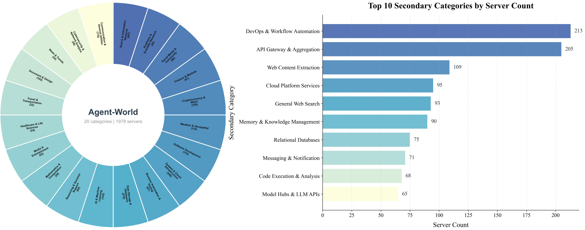
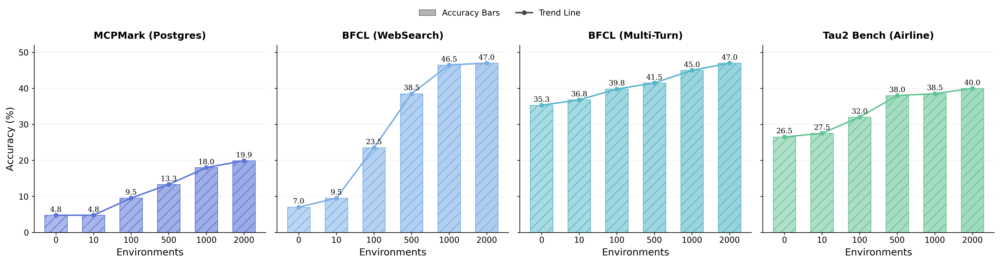
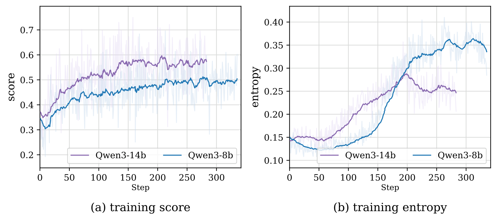

1Gaoling School of Artificial Intelligence, Renmin University of China 2ByteDance Seed *Work was done during their internship at ByteDance Seed †Corresponding Author
What is Agent-World?
A self-evolving training arena that unifies scalable environment synthesis
with continuous agent training — autonomously mining real-world tool ecosystems,
synthesizing verifiable tasks, and driving agents to evolve through diagnostic feedback loops.

Hierarchical environment taxonomy across 20 primary categories and their subcategories.
Agent Demos
Real-time interaction demos across diverse Agent-World MCP environments. Scroll horizontally or use the arrow buttons to browse.
Flight and Stay Search Server
Travel & Transportation›Booking & Hospitality
Ecomm MCP Server
Search & Information Retrieval›API Gateway & Aggregation
Notion MCP Server
Document & Design›Office & Text Processing
Slack Workspace Automation Server
Social Media & Community›Social Network Integration
Population Data Server
Search & Information Retrieval›API Gateway & Aggregation
Telecom API MCP Server
Communication & General Utilities›Messaging & Notification
Twitter MCP Server
Social Media & Community›Social Network Integration
GitHub
System & Cloud Infrastructure›Cloud Platform Services
Document Operations Server
Document & Design›Office & Text Processing
Notion MCP Server
Document & Design›Office & Text Processing
Key Capabilities
Six core pillars powering the Agent-World ecosystem
Real-World Environment Mining
Autonomously discovers and mines structured databases from real-world sources — MCP servers, tool docs, and industrial PRDs.
2K Environments & 19K Tools
Builds over 2,000 realistic environments spanning 20 primary categories, each equipped with executable tool interfaces — totaling 19K+ validated tools with rich parameters.
Graph & Programmatic Tasks
Synthesizes verifiable tasks via tool dependency graphs and executable Python solutions with controllable difficulty scaling.
Multi-Environment Agent RL
Closed-loop RL training across diverse environments with structured verifiable rewards and GRPO optimization.
Self-Evolving Arena
Automatically diagnoses agent weaknesses through dynamic evaluation, then generates targeted tasks to drive iterative improvement.
Strong Results on 23 Benchmarks
Demonstrates strong performance across agentic tool use, advanced AI assistant, software engineering, deep research, and reasoning benchmarks.
Abstract
Large language models are increasingly expected to serve as general-purpose agents that interact with external, stateful tool environments.
The Model Context Protocol (MCP) and broader agent skills offer a unified interface for connecting agents with scalable real-world services,
but training robust agents remains limited by the lack of realistic environments and principled mechanisms for lifelong learning.
In this paper, we present Agent-World, a self-evolving training arena for advancing general agent intelligence through scalable environments.
Agent-World has two main components:
(1) Agentic Environment-Task Discovery, which autonomously explores topic-aligned databases and executable tool ecosystems from thousands of real-world environment themes and synthesizes verifiable tasks with controllable difficulty; and
(2) Continuous Self-Evolving Agent Training, which combines multi-environment reinforcement learning with a self-evolving agent arena that automatically identifies capability gaps through dynamic task synthesis and drives targeted learning, enabling the co-evolution of agent policies and environments.
Across 23 challenging agent benchmarks, Agent-World consistently outperforms strong proprietary models and environment scaling baselines. Further analyses reveal scaling trends with environment diversity and self-evolution rounds, offering insights for building general agent intelligence.
Introduction
As the capability frontier of large language models continues to expand, expectations are shifting from chat-oriented text generation toward general-purpose agent assistants. Ideally, such agents should seamlessly integrate real-world interaction with verbal reasoning, and continuously learn from experience to improve themselves. Realizing these agentic capabilities requires training LLMs in dynamic environments equipped with executable tools, forming a "Generation–Execution–Feedback" interaction loop.
With the rise of agentic reinforcement learning (Agent RL), several agent systems built on static tool environments have demonstrated strong practical value. However, open-world tool environments are inherently compositional and stateful. For instance, in a flight-booking workflow, an agent should follow a valid action order (check inventory → execute booking → update the calendar), while each action also modifies the underlying environment state. Prior work centered on stateless or single-tool settings is insufficient for realistic applications.
Two key bottlenecks remain unresolved:
Scalable Realism and Complex Environment Synthesis
Existing environments are often LLM-generated or derived from limited open-source toolchains, which often mismatch real-world interaction logic. Synthetic environments are limited in complexity, restricting agent training on long-horizon, state-intensive tasks.
Continuous Self-Evolving Training Mechanisms
Existing work has primarily emphasized environment construction and scaling, while lacking principled mechanisms that use scalable environments to diagnose agent weaknesses and drive continual self-improvement.
We propose Agent-World, a general-purpose agent training arena that unifies scalable environment synthesis with continuous self-evolving training. Agent-World follows a two-stage design that forms a closed-loop training process.
Key Contributions
We introduce Agent-World, a general-purpose agent training arena that unifies scalable environment synthesis with a continuous self-evolving training mechanism, forming a co-evolution loop between agent policies and environments.
We propose Agentic Environment-Task Discovery, which mines realistic executable environments from real-world environment themes and synthesizes diverse verifiable tasks with controllable difficulty.
We propose Continuous Self-Evolving Agent Training, which integrates multi-environment agentic RL with a self-evolving arena to automatically diagnose agent weaknesses and drive targeted learning in a closed training loop.
Experiments across 23 challenging agent benchmarks demonstrate the superior performance of Agent-World. Further analysis reveals scaling relationships among environment diversity, evolution rounds, and agent performance.
Method
Agent-World contains two tightly coupled components that form a closed loop: scalable environments support agent training, while training-time diagnosis feeds back into the next round of environment-task construction.
1
Agentic Environment-Task Discovery
Environment Theme Collection
We systematically gather environment themes from three real-world sources:
(1) MCP Servers — real-world server specifications from Smithery with structured JSON documents;
(2) Tool Documentations — open-source datasets covering real tool-use scenarios;
(3) Industrial PRDs — product requirement documents containing domain workflows and system interfaces.
Together, these form a seed topic set of over 2,000 environment themes across 20 primary categories.
Hierarchical Environment Taxonomy
We design a three-level hierarchical classification system to organize all environment themes: 20 first-tier categories (e.g., Document & Design, Social Media & Community, System & Cloud Infrastructure), each subdivided into fine-grained second-tier subcategories (e.g., Office & Text Processing, Social Network Integration, Cloud Platform Services), and finally mapped to specific MCP server instances at the third tier. This taxonomy ensures broad domain coverage, enables systematic gap analysis during self-evolving training, and supports controlled difficulty scaling across diverse real-world domains.
Agentic Database Mining
Unlike prior work that uses LLM-synthesized databases, we argue that the web already contains abundant, high-value structured data. We design a deep-research agent that autonomously mines and processes web data into environment databases. For each topic, the agent conducts iterative loops for in-depth information retrieval and data mining, followed by a database complexification process to iteratively expand and enrich the database over multiple rounds.
Tool Interface Generation and Verification
A tool-design agent produces candidate tools and unit test cases grounded in the mined databases. We perform cross-validation to retain tools that: (1) compile successfully, (2) achieve accuracy >0.5 across test cases, and (3) belong to environments with at least one tool and one test case. The resulting ecosystem contains 19K+ distinct tools with rich parameters.
Verifiable Task Synthesis
We synthesize high-quality agentic tasks through two complementary strategies:
Graph-Based Task Synthesis: We construct weighted tool dependency graphs and perform random walks to generate tool-call sequences. From these sequences, an LLM drafts task descriptions and ground-truth answers, followed by consistency verification (ReAct agent × 5 runs).
Programmatic Task Synthesis: We directly generate executable Python solutions with complex control flows (loops, branches, aggregations). Each task is paired with an executable verification script for robust evaluation beyond simple string matching.
Both methods support difficulty scaling — expanding tool chains, increasing non-linear reasoning requirements, and obscuring tool names to force higher-level planning.
Comprehensive statistics of Agent-World environments and synthesized tasks, including environment diversity, tool coverage, file-type distribution, and task difficulty characteristics.
2
Continuous Self-Evolving Agent Training
Multi-Environment Agent Reinforcement Learning
We implement a closed-loop interaction among three components: an LLM policy (generates actions conditioned on history), a tool interface/runtime (executes tools in sandboxed environments), and a database state (provides verifiable, updatable data backbone). Tasks within each global batch are paired with independent environments, realizing multi-environment rollouts.
Structured Verifiable Reward: Graph-based tasks are evaluated via rubric-conditioned LLM-as-judge; programmatic tasks are verified through executable validation scripts in sandboxes. We adopt GRPO (Group Relative Policy Optimization) for stable training.
Self-Evolving Agent Arena
The environment ecosystem serves as a dynamic diagnostic arena:
Phase 1 — Dynamic Evaluation: Synthesize fresh verifiable tasks in held-out arena environments at each iteration, preventing overfitting to a static benchmark.
Phase 2 — Agentic Diagnosis: A diagnosis agent analyzes per-task failure traces, error distributions, and environment metadata to identify weak environments and generate task-generation guidelines.
Phase 3 — Agent-Environment Co-Evolution: Re-run task synthesis conditioned on diagnosed weaknesses, optionally complexify databases, and continue RL to obtain an improved policy. This creates a self-evolving loop:
The Overall Framework of Continuous Self-Evolving Agent Training.
Experiments
We evaluate Agent-World on 23 benchmarks spanning agentic tool use, advanced AI assistant, software engineering, deep research, and general reasoning, using Qwen3-8B/14B backbones trained with GRPO.
Main Results on Agentic Tool-Use Benchmarks
We report accuracy (%) across three benchmark suites: MCP-Mark, BFCL V4, and τ²-Bench.
Method
MCP-Mark
BFCL V4
τ²-Bench
File.
Github
Notion
Play.
Post.
Avg.
WebS.
Mem.
Multi-T.
NoLive
Live
Relev.
Irrelev.
Avg.
Retail
Telec.
Airline
Avg.
Frontier Proprietary Models
GPT-5.2 High
60.0
47.8
42.9
40.0
66.7
53.1
75.5
45.8
48.5
81.9
70.4
75.0
88.7
62.9
81.6
95.8
62.5
80.2
Claude Sonnet-4.5
32.5
29.4
25.0
27.0
50.0
33.3
81.0
65.0
61.4
88.7
81.1
68.8
86.6
73.2
86.2
98.0
70.1
84.7
Gemini-3 Pro
56.7
45.7
43.8
40.0
70.2
50.8
80.0
61.7
60.8
90.7
83.1
68.8
85.6
72.5
85.3
98.0
72.7
85.4
Seed 2.0
60.0
39.1
53.6
40.0
81.0
54.7
92.0
57.8
62.3
89.0
82.2
76.6
75.0
73.4
90.4
94.2
—
—
Open-Source Foundation Models (8B–685B)
DeepSeek-V3.2-685B
36.7
20.7
45.5
17.0
66.6
36.7
69.5
54.2
37.4
34.9
53.7
37.5
93.2
54.1
—
—
—
80.3
GPT-OSS-120B
5.8
4.4
3.6
3.0
7.1
4.7
—
—
—
—
—
—
—
—
67.8
49.2
48.0
55.0
Qwen3-8B
3.3
0.0
0.0
4.0
4.8
2.4
7.0
17.6
35.4
90.2
80.9
81.3
77.2
40.4
34.0
18.0
26.5
26.2
Qwen3-14B
3.3
4.4
0.0
0.0
9.5
3.4
4.0
19.8
36.9
90.0
82.4
81.3
79.4
41.0
55.3
14.9
27.0
32.4
Qwen3-32B
10.0
0.0
3.6
0.0
23.8
7.5
26.0
15.7
43.3
90.3
82.0
81.3
82.4
46.7
59.5
27.2
48.0
44.9
Qwen3-235B-A22B
13.3
0.0
10.7
0.0
4.8
5.8
54.0
23.9
45.4
37.4
68.9
87.5
81.7
47.9
71.9
58.0
45.6
58.5
Open-Source Environment Scaling Methods (7B–14B)
Simulator-8B
3.3
0.0
0.0
4.0
4.8
2.4
17.5
6.0
4.1
47.6
44.6
31.3
87.3
23.9
32.2
29.2
34.0
31.8
TOUCAN-7B
0.0
0.0
0.0
0.0
4.8
1.0
21.0
18.5
17.8
81.0
73.9
81.3
78.6
36.6
22.8
10.5
20.0
17.7
EnvScaler-8B
10.0
4.4
0.0
4.0
9.5
5.6
23.0
21.9
47.1
88.5
82.2
93.8
74.6
47.6
49.6
32.7
31.5
37.9
AWM-8B
3.3
0.0
0.0
4.0
4.8
2.4
9.5
15.7
34.9
90.2
80.5
93.8
73.9
40.0
41.2
38.5
23.5
34.4
AWM-14B
3.3
8.7
0.0
4.0
9.5
5.1
10.0
19.8
37.6
90.2
81.5
75.0
79.4
42.4
63.6
17.8
31.5
39.0
ScaleEnv-8B
—
—
—
—
—
—
—
—
—
—
—
—
—
—
50.9
27.2
37.5
38.5
Agent-World-8B
13.3
4.4
3.6
4.0
19.1
8.9
47.0
21.7
44.5
83.3
79.6
93.8
80.2
51.4
72.8
50.9
40.0
61.8
Agent-World-14B
16.6
4.4
3.6
4.0
38.1
13.3
53.0
23.9
53.9
82.3
79.3
93.8
81.0
55.8
74.5
56.1
52.0
65.4
Key Findings
(1) Foundation models remain limited in complex agentic tool-use scenarios.
Even advanced proprietary models show clear limitations. GPT-5.2 High achieves only 53.1% on MCP-Mark, while open-source models like GPT-OSS-120B and Qwen3-235B-A22B score only 4.7% and 5.8%. These benchmarks cover diverse stateful environments, suggesting current models still struggle with long-horizon tool use requiring multi-step planning and state tracking.
(2) Existing environment-scaling methods still suffer from uneven capability gains.
Simulator-based methods such as Simulator-8B achieve strong results on τ²-Bench yet perform poorly on MCP-Mark and BFCL V4. Code-based methods like EnvScaler-8B and AWM-8B/14B provide broader gains but show clear weaknesses on specific environments including GitHub and Notion.
(3) Agent-World achieves more consistent cross-environment generalization.
Agent-World consistently outperforms prior environment-scaling baselines across all three benchmark suites. Agent-World-8B achieves 61.8% on τ²-Bench, 51.4% on BFCL V4, and 8.9% on MCP-Mark. Agent-World-14B surpasses even DeepSeek-V3.2-685B on BFCL-V4 (55.8% vs. 54.1%).
Generalization across long-horizon agentic reasoning scenarios. Comparison of Qwen3-8B, EnvScaler-8B, and Agent-World-8B across General Reasoning, Agentic Search & Coding, and Knowledge & MCP.
Generalization on Advanced AI Assistant Benchmarks
Generalization on advanced agentic assistant benchmarks. Comparison of Qwen3, EnvScaler, AWM, and Agent-World series on SkillsBench, ARC-AGI-2, and Claw-Eval.
Scaling Analysis of Training Environments
We progressively increase the number of training environments from 0 to 2000. Performance improves consistently across all domains as the environment scale grows. Averaged over four domains, the score rises from 18.4% to 38.5% (+20.1 points), more than doubling the initial level. The gains are particularly pronounced on interaction-intensive tasks.

Scaling relationship of training environments: Downstream agent performance scales positively with the number of synthesized training environments.
Analysis of Continuous Self-Evolution
To validate Continuous Self-Evolving Agent Training, we run the same two-round self-evolving arena loop from two different starting points: Agent-World-14B and EnvScaler-8B. Results show monotonic gains on all three evaluation suites for both models:
Model / Round
τ²-Bench
BFCL-V4
MCP-Mark (Post.)
Agent-World-14B (base)
45.3
52.4
29.5
+1 round
48.6 (+3.3)
54.9 (+2.5)
36.3 (+6.8)
+2 rounds
50.5 (+1.9)
55.8 (+0.9)
38.1 (+1.8)
EnvScaler-8B (base)
37.9
47.6
9.5
+1 round
40.2 (+2.3)
49.1 (+1.5)
13.9 (+4.4)
+2 rounds
41.6 (+1.4)
50.0 (+0.9)
15.1 (+1.2)
The largest gains across two rounds appear on MCP-Mark for both models: +8.6 for Agent-World and +5.6 for EnvScaler. This setting requires stronger state tracking and more reliable interaction with realistic MCP server environments. Importantly, EnvScaler-8B also improves, indicating that the loop not only benefits our base model but also yields sustained gains for other environment-scaling baselines without relying on Agent-World initialization.
Training Dynamics

Training Dynamics of Agent-World. (a) Training reward score and (b) actor entropy over training steps for Qwen3-8B and Qwen3-14B backbones using GRPO on synthesized environments.
Conclusion
We presented Agent-World, a self-evolving training arena for general-purpose agents in realistic tool environments.
Agent-World unifies two tightly coupled components:
Agentic Environment-Task Discovery mines topic-aligned real-world databases and executable toolsets from large-scale themes and synthesizes verifiable tasks with controllable difficulty.
Continuous Self-Evolving Agent Training combines multi-environment reinforcement learning with an agentic diagnostic arena to identify capability gaps and drive targeted iterative data expansion.
Experiments across 23 challenging benchmarks demonstrate that Agent-World consistently improves performance over strong baselines.
Further analyses reveal clear scaling trends with respect to environment diversity, evolution rounds, and task difficulty,
suggesting that scalable realistic environments are not only useful data sources, but also critical infrastructure for advancing general agent capabilities.
Citation
@article{dong2026agentworld,
title = {Agent-World: Scaling Real-World Environment Synthesis for Evolving General Agent Intelligence},
author = {Dong, Guanting and Lu, Junting and Huang, Junjie and Zhong, Wanjun and Liu, Longxiang and Huang, Shijue and Li, Zhenyu and Zhao, Yang and Song, Xiaoshuai and Li, Xiaoxi and Jin, Jiajie and Zhu, Yutao and Wang, Hanbin and Lei, Fangyu and Luo, Qinyu and Chen, Mingyang and Chen, Zehui and Feng, Jiazhan and Wen, Ji-Rong and Dou, Zhicheng},
journal = {arXiv preprint},
year = {2026}
}
Acknowledgment
We greatly thank Yujia Qin2 and Guang Shi2 for supporting this work and providing valuable suggestions. We also thank Yifei Chen1 for valuable discussions.